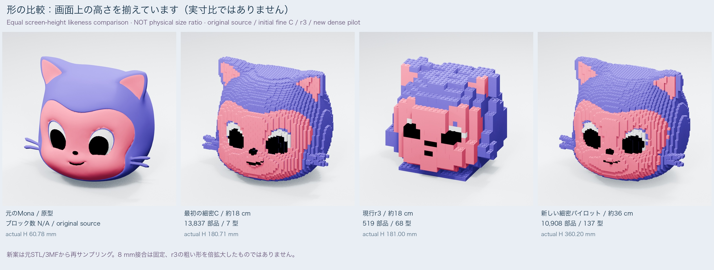
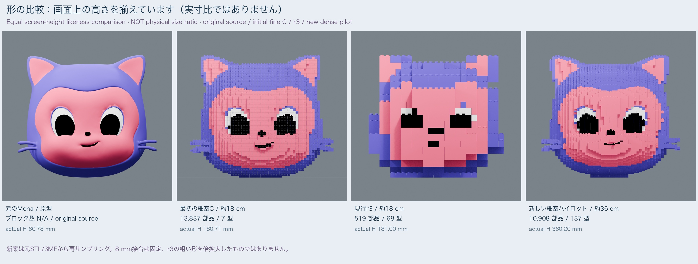
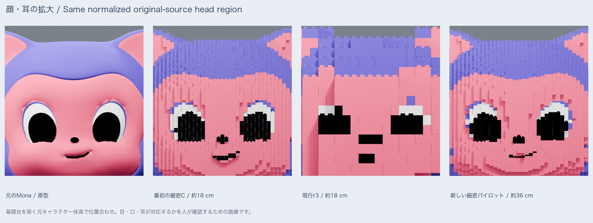
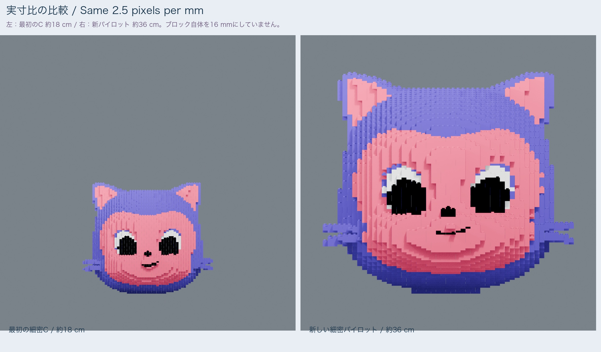
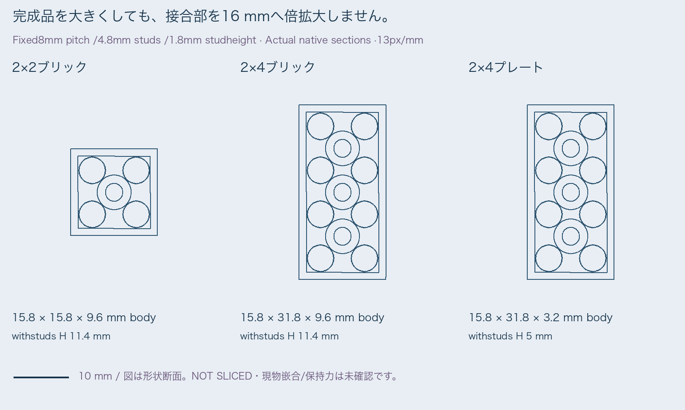

UNSELECTED PILOT / NOT PHYSICALLY TESTED / NOT SLICED / current r3 unchanged
NOT_SELECTED / physical_fit UNKNOWN / retention UNKNOWN / NOT_SLICED / full_print ON_HOLD
Priority is resemblance to the initial fine C face, proportions and roundness, not minimizing pieces. User visual approval is still required.
Actual data / camera records · CSV · 日本語


| Role | Actual pieces | Types | Actual height | 1×1 |
|---|---|---|---|---|
| Original Mona source | N/A | N/A | 60.78 mm | N/A |
| Initial fine C / about18cm | 13,837 | 7 | 180.71 mm | 1766 |
| Current r3 / about18cm | 519 | 68 | 181.00 mm | 5 |
| New dense pilot / about36cm | 10,908 | 137 | 360.20 mm | 32 |
The new pilot has 10,908 actual pieces. It is not an enlarged coarse r3 model: 115,033 cells were freshly sampled from the original painted source; 8 mm interfaces stayed fixed. The primary initial-C reference contains 82,357 sampled cells and 13,837 pieces. Different grouping means sample density and physical piece count are not interchangeable.
Actual assembly instances including foundation and internal parts; excludes 2 temporary pedestals and the stage. Not sampled-cell, type or vertex counts.

The original curve remains the reference; plate terraces and studs are still visible. These images require the user's likeness decision.


Shape panels normalize all 4 models to equal screen height. They are not size-ratio images. Only the separate physical-size image uses identical px/mm.
| vs original | Front IoU | Side IoU | Face-label match |
|---|---|---|---|
| Initial fine C / about18cm | 0.9360 | 0.9418 | 0.9096 |
| Current r3 / about18cm | 0.8507 | 0.8443 | 0.7916 |
| New dense pilot / about36cm | 0.9547 | 0.9540 | 0.9237 |
Actual source/native emission-label views, source-body registration, added foundations hidden. Studs, seams, palette quantization and registration affect these values; they cannot certify aesthetics or mechanics.